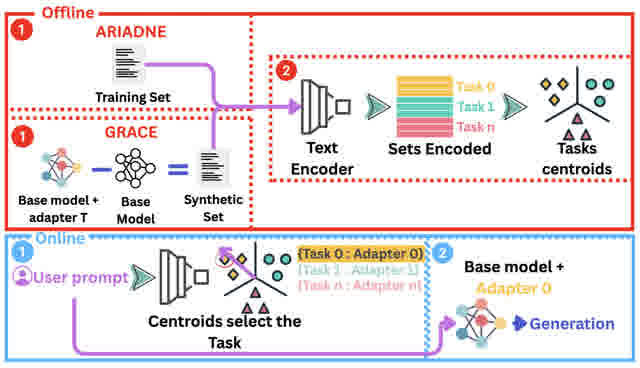
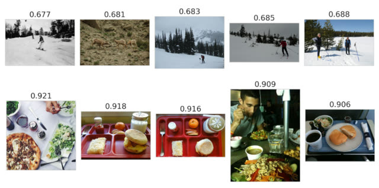
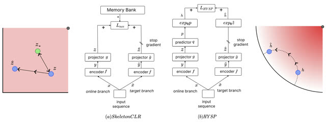

Publications
Selected research publications, with links to papers, code, and BibTeX entries.
2026
-

GPart: End-to-End Isometric Fine-Tuning via Global Parameter Partitioning
Preprint 2026
BibTeX
@misc{mandica2026gpart, title = {GPart: End-to-End Isometric Fine-Tuning via Global Parameter Partitioning}, author = {Mandica, Paolo and Brzozowski, Micha{\l} and Dubanowska, Zuzanna and Chung, Neo Christopher}, year = {2026}, eprint = {2605.14841}, archivePrefix = {arXiv}, primaryClass = {cs.LG}, url = {https://arxiv.org/abs/2605.14841}, doi = {10.48550/arXiv.2605.14841} } -

Semantic Adapter Routing with Fine-Tuning Task Embeddings
Preprint 2026
BibTeX
@misc{cassano2026semantic, title = {Semantic Adapter Routing with Fine-Tuning Task Embeddings}, author = {Cassano, Enrico and Brzozowski, Micha{\l} and Mandica, Paolo and Dubanowska, Zuzanna and Chung, Neo Christopher}, year = {2026}, eprint = {2606.19079}, archivePrefix = {arXiv}, primaryClass = {cs.AI}, url = {https://arxiv.org/abs/2606.19079}, doi = {10.48550/arXiv.2606.19079} }

2025
-

Representation-based Broad Hallucination Detectors Fail to Generalize Out of Distribution
EMNLP 2025 Findings
BibTeX
@inproceedings{dubanowska-etal-2025-representation, title = {Representation-based Broad Hallucination Detectors Fail to Generalize Out of Distribution}, author = {Dubanowska, Zuzanna and \.{Z}elaszczyk, Maciej and Brzozowski, Micha{\l} and Mandica, Paolo and Karpowicz, Michal P.}, editor = {Christodoulopoulos, Christos and Chakraborty, Tanmoy and Rose, Carolyn and Peng, Violet}, booktitle = {Findings of the Association for Computational Linguistics: EMNLP 2025}, month = {nov}, year = {2025}, address = {Suzhou, China}, publisher = {Association for Computational Linguistics}, pages = {17563--17575}, doi = {10.18653/v1/2025.findings-emnlp.952}, url = {https://aclanthology.org/2025.findings-emnlp.952/} }
2024
-

Hyperbolic Active Learning for Semantic Segmentation under Domain Shift
ICML 2024
BibTeX
@inproceedings{pmlr-v235-franco24a, title = {Hyperbolic Active Learning for Semantic Segmentation under Domain Shift}, author = {Franco, Luca and Mandica, Paolo and Kallidromitis, Konstantinos and Guillory, Devin and Li, Yu-Teng and Darrell, Trevor and Galasso, Fabio}, booktitle = {Proceedings of the 41st International Conference on Machine Learning}, pages = {13864--13884}, year = {2024}, editor = {Salakhutdinov, Ruslan and Kolter, Zico and Heller, Katherine and Weller, Adrian and Oliver, Nuria and Scarlett, Jonathan and Berkenkamp, Felix}, volume = {235}, series = {Proceedings of Machine Learning Research}, month = {21--27 Jul}, publisher = {PMLR}, url = {https://proceedings.mlr.press/v235/franco24a.html} } -

Hyperbolic Learning with Multimodal Large Language Models
ECCV 2024 - Beyond Euclidean Workshop
BibTeX
@inproceedings{mandica2024hyperbolic, title = {Hyperbolic Learning with Multimodal Large Language Models}, author = {Mandica, Paolo and Franco, Luca and Kallidromitis, Konstantinos and Petryk, Suzanne and Galasso, Fabio}, editor = {Del Bue, Alessio and Canton, Cristian and Pont-Tuset, Jordi and Tommasi, Tatiana}, booktitle = {Computer Vision -- ECCV 2024 Workshops, Part XVII}, series = {Lecture Notes in Computer Science}, volume = {15639}, pages = {382--398}, publisher = {Springer}, year = {2025}, address = {Cham}, doi = {10.1007/978-3-031-91585-7_23}, url = {https://link.springer.com/chapter/10.1007/978-3-031-91585-7_23} }

2023
-

HYSP: HYperbolic Self-Paced Learning for Self-Supervised Skeleton-based Action Representations
ICLR 2023
BibTeX
@inproceedings{franco2023hysp, title = {Hyperbolic Self-paced Learning for Self-supervised Skeleton-based Action Representations}, author = {Franco, Luca and Mandica, Paolo and Munjal, Bharti and Galasso, Fabio}, booktitle = {The Eleventh International Conference on Learning Representations}, year = {2023}, month = {may}, address = {Kigali, Rwanda}, url = {https://openreview.net/forum?id=3Bh6sRPKS3J}, doi = {10.48550/arXiv.2303.06242} }